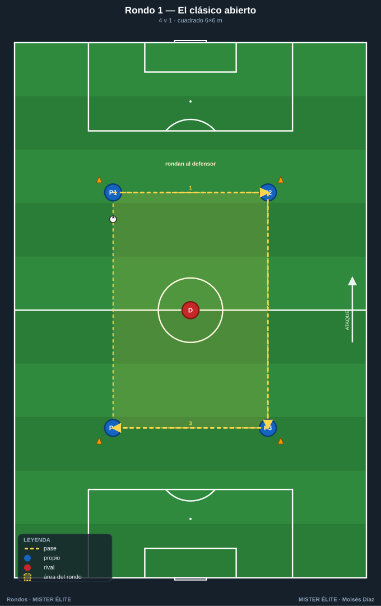
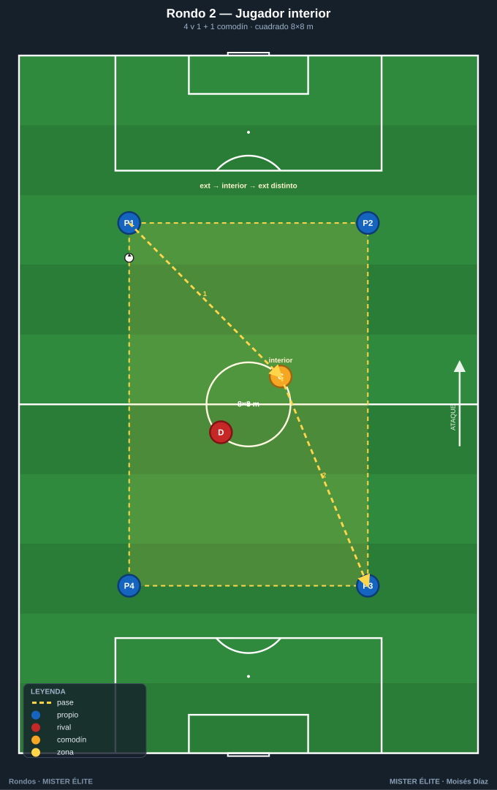
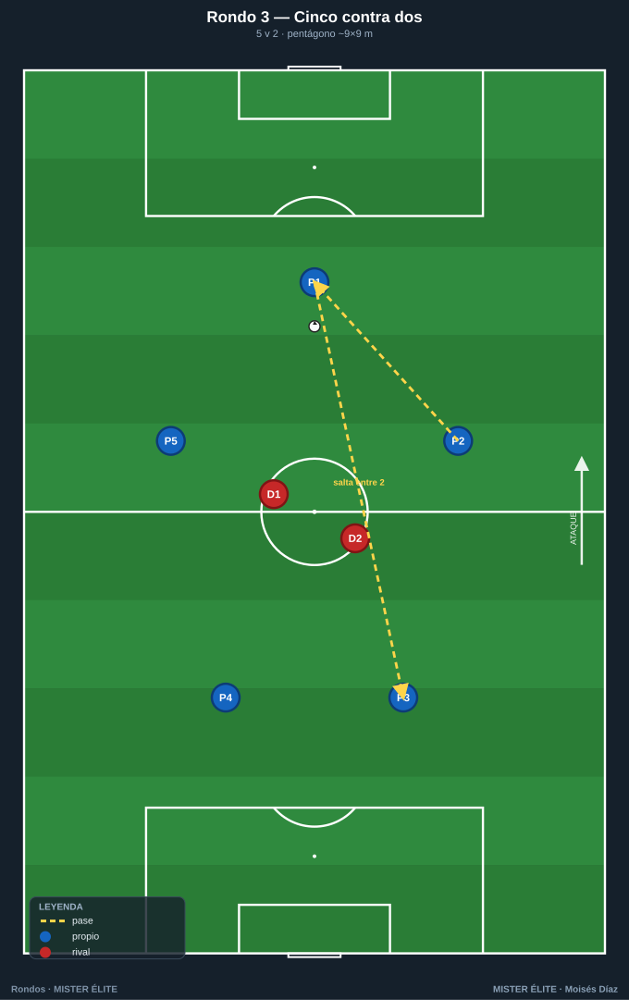
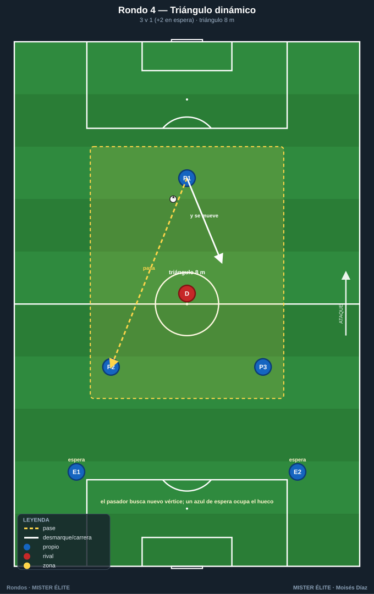
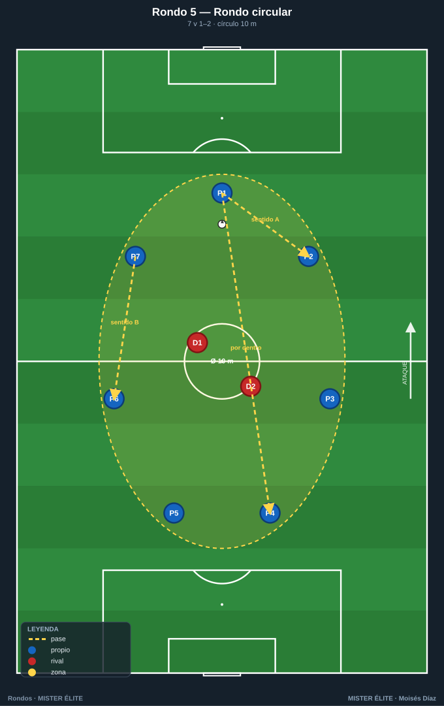
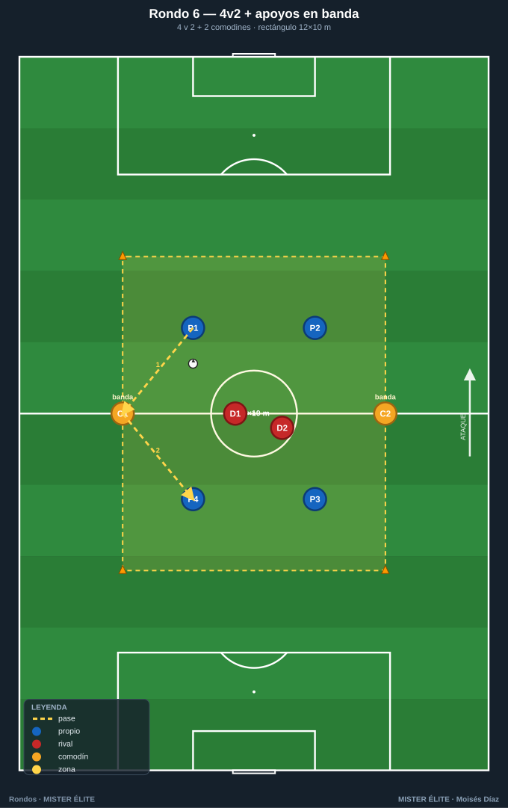
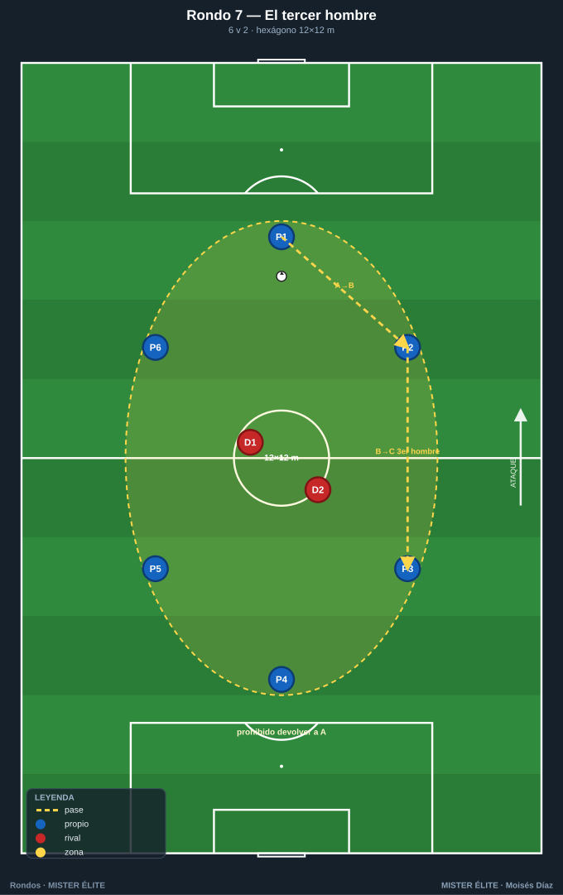

Familia 1 · Iniciación y mantenimiento (Rondos 1–7)
Base técnica: calidad de pase, orientación del primer apoyo, fijar para pasar, ofrecer línea de pase. Foco en el POSEEDOR.
Notación: poseedores = azules, defensores/recuperadores = rojos, comodines = ámbar. Espacio delimitado con conos. Flechas: pase (amarillo discontinuo), conducción (azul), desmarque (blanco), presión (la del defensor).
Rondo 1 — "El clásico abierto" (4v1)
Objetivo - Técnico: precisión y peso del pase raso, superficie de contacto (interior), control orientado del receptor. - Táctico: concepto de apoyo y triángulo permanente; pasar la línea del defensor. - Cognitivo: escaneo previo a recibir (¿de qué lado viene la presión?).
Organización - Relación: 4 v 1 (4 azules en las esquinas, 1 rojo dentro). - Espacio: cuadrado de 6×6 m — conos en las 4 esquinas, los azules sobre los conos. - Material: 1 balón, 4 conos, 4 petos azules, 1 peto rojo.

Desarrollo 1. Los 4 azules conservan el balón rondando al rojo. Posiciones fijas en las esquinas al inicio. 2. El defensor presiona para robar o forzar la salida del balón del cuadrado. 3. Quien recibe orienta el control al lado libre y busca al compañero que el defensor "deja".
Provocaciones (medibles) - Toques libres la 1.ª serie; máximo 2 toques la 2.ª. - El defensor cambia cuando roba, saca el balón del cuadro o el azul da más toques de los permitidos. - Reto de equipo: 10 pases seguidos = 1 punto; el defensor reinicia el contador al robar.
Variantes (fácil → difícil) - Fácil: cuadro 7×7, toques libres, defensor pasivo (50 %). - Medio: 6×6, máximo 2 toques. - Difícil: a 1 toque y el cuadro se reduce a 5×5.
Coaching - "Recibe de perfil, nunca de frente al balón." - "Fija al defensor con tu cuerpo antes de pasar; oblígale a comprometerse a un lado." - Pase al pie del lado contrario a la presión.
Duración / series: 3 series de 3 min, 45–60 s de descanso. Rotar el defensor en cada robo.
Rondo 2 — "Rondo con jugador interior" (4v1 + 1 comodín central)
Objetivo - Técnico: pase entre líneas y control de espaldas del jugador interior. - Táctico: uso del hombre libre entre el defensor y la línea de pase; jugar el "tercer hombre". - Cognitivo: leer cuándo el interior está disponible (defensor de espaldas a él).
Organización - Relación: 4 v 1 + 1 comodín (4 azules en esquinas, 1 ámbar dentro junto al rojo). - Espacio: cuadrado de 8×8 m, conos en esquinas. - Material: 1 balón, 4 conos, petos (4 azul, 1 ámbar, 1 rojo).

Desarrollo 1. Los 4 azules exteriores rondan; el comodín ámbar se mueve dentro del cuadro buscando línea de pase. 2. Cuando el interior recibe, devuelve de primeras o gira para cambiar el sentido del balón (pared interior). 3. El defensor debe elegir: tapar el interior o presionar la línea exterior.
Provocaciones (medibles) - +1 punto cada vez que el balón pasa por el comodín interior y vuelve al exterior sin pérdida. - Exteriores a 2 toques; el comodín interior siempre a 1 toque. - El interior no puede recibir dos veces seguidas → fuerza variar el juego.
Variantes (fácil → difícil) - Fácil: interior libre de toques, 9×9. - Medio: interior a 1 toque, 8×8. - Difícil: dos comodines interiores alternándose; solo puntúa si el balón entra por uno y sale por el lado opuesto.
Coaching - "Busca al interior cuando el defensor le da la espalda." - Comodín: "ofrécete en el carril que el defensor no ve." - Jugar el tercer hombre: el que da la pared no es quien finaliza.
Duración / series: 3×3 min. Rotar comodín cada serie.
Rondo 3 — "Cinco contra dos" (5v2)
Objetivo - Técnico: velocidad de circulación, primer toque hacia adelante. - Táctico: mantener anchura y profundidad para tener siempre dos líneas de pase; superar a dos presionadores. - Cognitivo: decidir entre pase corto seguro o pase que salta a un defensor.
Organización - Relación: 5 v 2 (5 azules en pentágono, 2 rojos dentro). - Espacio: pentágono inscrito en ~9×9 m (5 conos formando el pentágono; los azules sobre los conos). - Material: 1 balón, 5 conos, petos (5 azul, 2 rojo).

Desarrollo 1. Los 5 azules conservan; los 2 rojos presionan coordinados. 2. El poseedor asegura siempre 2 opciones (el de al lado y el que salta una posición). 3. Si los dos defensores se juntan en un lado, abrir al contrario.
Provocaciones (medibles) - Máximo 2 toques. - +1 punto por cada pase que "salte" entre los dos defensores (pase interior). - Si los azules completan 8 pases, los defensores hacen 5 abdominales al cambiar.
Variantes (fácil → difícil) - Fácil: 10×10, toques libres. - Medio: 9×9, 2 toques. - Difícil: 1 toque y prohibido devolver al que te la dio → fuerza circular.
Coaching - "Abre el cuerpo para ver los dos lados antes de recibir." - "Si te cierran un lado, el otro está libre: cámbialo rápido." - Mantener distancias: ni tan cerca (roban a dos) ni tan lejos (pase impreciso).
Duración / series: 4×3 min. Rotar la pareja de defensores.
Rondo 4 — "Triángulo dinámico" (3v1 con relevos)
Objetivo - Técnico: pase y control en movimiento (no en posición fija). - Táctico: sostener el triángulo aunque los apoyos roten; movilidad de los apoyos. - Cognitivo: coordinación del que pasa y del que se desmarca para rehacer el triángulo.
Organización - Relación: 3 v 1 con 2 azules en espera que entran por relevo. - Espacio: triángulo de 8 m de lado (3 conos), zona de espera fuera. - Material: 1 balón, 3 conos, petos (5 azul total, 1 rojo).

Desarrollo 1. Tres azules forman triángulo y rondan al rojo, pero tras pasar, el pasador se desplaza a un nuevo vértice y un azul de espera ocupa el hueco. 2. El triángulo "viaja": no es estático. 3. El defensor persigue el balón intentando robar en la transición de posiciones.
Provocaciones (medibles) - Obligatorio moverse tras pasar; quien se queda quieto, su equipo pierde el punto del pase. - A 2 toques. - +1 punto por cada 6 pases manteniendo el triángulo en movimiento.
Variantes (fácil → difícil) - Fácil: triángulo fijo, sin relevos. - Medio: con relevos de los de espera. - Difícil: triángulo de 6 m + defensor al 100 % + 1 toque en las paredes.
Coaching - "Pasa y muévete: el balón descansa, tú no." - "Reconstruye el triángulo siempre: amplitud y un apoyo por detrás." - Timing del desmarque: salir cuando el compañero recibe, no antes.
Duración / series: 4 series de 2,5 min. Rotar defensor por robo.
Rondo 5 — "Rondo circular" (7v1–2 en círculo)
Objetivo - Técnico: pase de primera en superficie reducida, calidad bajo orientación 360°. - Táctico: romper la simetría del círculo cambiando ritmo y dirección del balón. - Cognitivo: percepción periférica total (apoyos a izquierda y derecha).
Organización - Relación: 7 v 1 o 7 v 2 (azules en círculo, rojos dentro). - Espacio: círculo de 10 m de diámetro (8 conos marcando el perímetro). - Material: 1 balón, 8 conos, petos.

Desarrollo 1. Los azules en círculo conservan; el balón puede circular en ambos sentidos. 2. Para batir al defensor se cambia de sentido o se salta por dentro a un compañero alejado. 3. El defensor cierra un sentido; los azules juegan por el otro.
Provocaciones (medibles) - A 1 toque (objetivo del círculo: ritmo). - Prohibido pasar al de al lado dos veces seguidas en el mismo sentido → obliga a cambiar el sentido. - +1 punto por cada pase "por dentro" del círculo que salta al defensor.
Variantes (fácil → difícil) - Fácil: círculo 12 m, 2 toques, 1 defensor. - Medio: 10 m, 1 toque, 1 defensor. - Difícil: 2 defensores y permitido jugar por dentro del círculo.
Coaching - "Cabeza arriba: tienes apoyos a los dos lados, decide antes de que llegue el balón." - "Cambia el sentido para descolocar al del medio." - Pase tenso y al pie (la distancia es corta: precisión, no fuerza).
Duración / series: 3×3 min. Rotar defensor(es) por robo o por tiempo.
Rondo 6 — "Cuatro contra dos con apoyos en banda" (4v2 + 2 comodines)
Objetivo - Técnico: pase exterior–interior y descarga; control orientado hacia el apoyo. - Táctico: uso de apoyos fijos para mantener cuando los 2 defensores aprietan; superioridad por fuera. - Cognitivo: identificar el apoyo libre cuando el centro está cerrado.
Organización - Relación: 4 v 2 + 2 comodines (4 azules dentro, 2 ámbar fijos en lados opuestos, 2 rojos dentro). - Espacio: rectángulo de 12×10 m; comodines en las dos líneas largas. - Material: 1 balón, 4 conos, petos (4 azul, 2 ámbar, 2 rojo).

Desarrollo 1. Los 4 azules conservan con ayuda de los 2 comodines de banda (a 1 toque, no entran al campo). 2. Si los rojos cierran el interior, se sale por un comodín y se vuelve a entrar (apoyo–descarga). 3. Los comodines mantienen anchura permanente.
Provocaciones (medibles) - Comodines a 1 toque y sin moverse del lado asignado. - +1 punto por la secuencia interior → comodín → interior distinto (no devolver al que se la dio). - 6 pases = punto extra.
Variantes (fácil → difícil) - Fácil: 14×11, comodines a 2 toques. - Medio: 12×10, comodín a 1 toque. - Difícil: solo 1 comodín disponible y defensores al 100 %.
Coaching - "El comodín es la válvula de escape: úsalo y vuelve a entrar." - "No devuelvas al que te la dio; cambia el punto de juego." - Apoyo de banda siempre con el cuerpo abierto al campo.
Duración / series: 4×3 min. Rotar comodines cada serie.
Rondo 7 — "El tercer hombre" (6v2 con devolución prohibida)
Objetivo - Técnico: control orientado y pase encadenado a dos toques; calidad del pase que salta una posición. - Táctico: automatizar el tercer hombre — quien recibe la pared no es quien la inició; circular en vez de devolver. - Cognitivo: anticipar al receptor libre (el "tercer hombre") antes de recibir.
Organización - Relación: 6 v 2 (6 azules en hexágono sobre los conos, 2 rojos dentro). - Espacio: cuadro de 12×12 m (6 conos repartidos en el perímetro formando hexágono). - Material: 1 balón, 6 conos, petos (6 azul, 2 rojo).

Desarrollo 1. Los 6 azules conservan; los 2 rojos presionan en pareja. 2. Prohibido devolver el pase al jugador que te lo dio: el balón sigue hacia un tercero, lo que obliga a que el apoyo y el tercer hombre se ofrezcan a la vez. 3. Secuencia tipo: A→B (pared), B→C libre (tercer hombre), sin B de vuelta a A.
Provocaciones (medibles) - Prohibido el pase de devolución al último pasador (si ocurre, balón a los rojos = punto rojo). - Azules a 2 toques. - +1 punto por cada 6 pases respetando la no-devolución; +1 extra por secuencia clara de tercer hombre.
Variantes (fácil → difícil) - Fácil: 7v2, 14×14, toques libres (solo la regla de no devolver). - Medio: 6v2, 12×12, 2 toques. - Difícil: 6v2 en 10×10 + un toque en la pared (el apoyo descarga de primeras al tercer hombre).
Coaching - "Si no puedes devolver, ya debes saber dónde está el tercer hombre antes de recibir." - "El apoyo se ofrece para descargar, no para tener el balón: pasa y libera." - Escaneo previo: el tercer hombre se localiza con la cabeza, no con la suerte.
Duración / series: 4 series de 3 min, 60 s descanso. Rotar la pareja defensora por tiempo o por robo.
MISTER ÉLITE — Moisés Díaz